Introduction
When creating a new project in Torque 2D, it is important
to know how to adjust your workspace and how the adjustment affects your
workflow. In this tutorial we are going to cover how to change your
design resolution, how to change your camera view, and how changing your
workspace in these ways will affect your project.
This tutorial will be using the stock TutorialBase project file that
comes with the engine. To open that file, launch T2D and click Open
Project. If you are already editing a project, click on File->Open
Project... Once the file browser is open, navigate to the games/TutorialBase folder. Select the project.t2dProj file to begin.
Camera View and Design Resolution
Your camera view is defined in T2D as a box with a thick border
around it. The color is based on your Scene Editor grid color
preferences (Edit->Preferences, Scene Editor tab). Though games can
take up much more space than this square, all that will be visible to
the end-user is what is inside of this square at any given moment (as
shown in Figure 1):
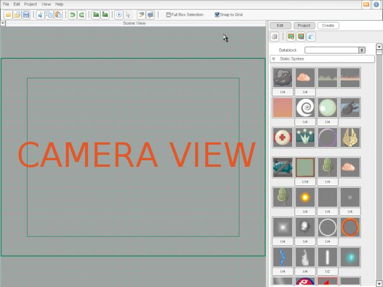
Figure 1
To begin, let's start by dragging in one of the graphics from the
Static Sprites library. I chose to drag in the GarageGames logo (as
shown in Figure 2). As you can see, once I drop the graphic in my scene,
it is automatically resized in the view. This is because of the design
resolution.
The design resolution is the size that T2D is going to assume your
camera view is. When it resizes graphics, it is going to resize them
relative to what the design resolution currently is. By default, the
design resolution is set to 800 x 600 - therefore all graphics that are
dragged into the scene will be sized properly relative to the camera
view.
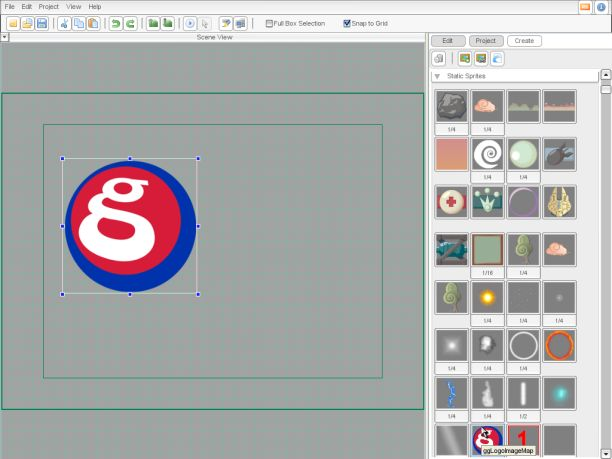
Figure 2
To access your design resolution, go up to the Edit Menu and choose
Preferences (as shown in Figure 3):
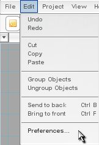
Figure 3
Once you click Preferences, you should be confronted by a dialog that
contains all of your preference settings. You will see three tabs along
the top of the dialog. Click on the tab marked "Scene Editor" (as
shown in Figure 4).
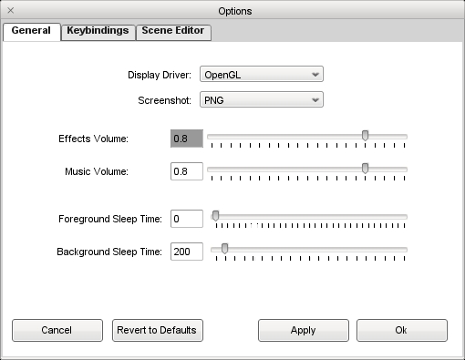
Figure 4
When you click on the Scene Editor tab of your preferences, you should
see Figure 5. About halfway down on the left side of your Scene Editor
preferences is the Design Resolution (as shown in Figure 5). As you can
see, the design resolution defaults at 800 X 600.
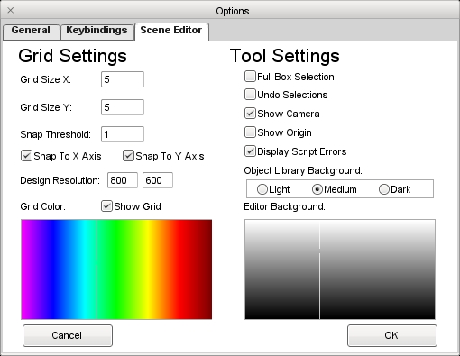
Figure 5
Let's change the design resolution to something else so you can see the
effect it has on your workspace. Change your design resolution to 1024 X
768 (as shown in Figure 6).
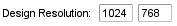
Figure 6
Now that you have changed the design resolution of your workspace, let's
see what it does to your project. Grab another one of those GarageGames
logos and drop it right next to the one we dragged in their earlier.
Immediately you should notice something: the logo is sized smaller than
it was before (as shown in Figure 7).
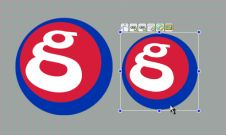
Figure 7
As stated above, T2D automatically resizes graphics in relation to the
design resolution. Since the design resolution is 1024 X 768, all of the
subsequent graphics placed in the workspace are going to be smaller.
You should also note that no graphics placed in the workspace before
changing the resolution are affected.
Change your design resolution back to default (800 X 600) and delete the
second logo we created. Now we are going to explore another method of
setting up your workspace: the Camera Tool.
The Camera Tool
The Camera Tool allows users to manually change the size of their
camera view. The Camera Tool is located along the top bar of the
Scene Editor (as shown in Figure 8):
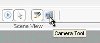
Figure 8
When you click on the Camera Tool, your view zooms out and shows you
your Camera View as a translucent box with resize handles along the
outer edges (as shown in Figure 9). You can resize your view in
many ways:
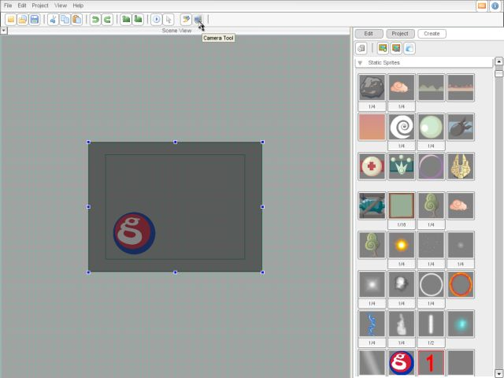
Figure 9
First, if you click on any resize handle and drag it in any direction,
the camera view will resize around its origin while keeping its default
aspect ratio (as shown in Figure 10).
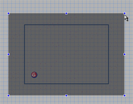
Figure 10
Second, if you click on any resize handle while holding the
CTRL key, it
resizes the camera view keeping the same aspect ratio while anchoring
the camera view to the opposite handle as you are grabbing (as shown
in figure 11).
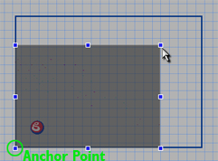
Figure 11
Third, if you click any of the resize handles while holding the
SHIFT
key, it resizes the camera view from the center but does NOT keep the
aspect ratio. This gives the user the opportunity to mess up the aspect
ratio of the scene (not recommended) (as shown in Figure 12).
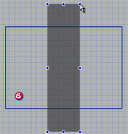
Figure 12
Finally, if you click on any of the resize handles while holding the
SHIFT and CTRL, your camera view will resize freely from an anchor point
opposite the one you grabbed without keeping the aspect ratio (as
shown in Figure 13).
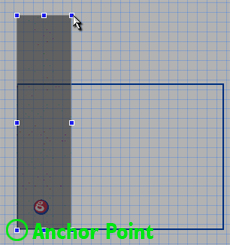
Figure 13
Neither of the last two methods are recommended in most cases since if
you mess up the aspect ratio you will get an interesting, skewed look to
your graphics. However, T2D still allows you to affect the aspect ratio
in case you ever work with an unusual aspect ratio such as those found
on a widescreen monitor, etc.
We now want to make the camera view larger. To do that, use either of
the first two methods to enlarge the camera view to a reasonably larger
size. To save the changes you have made to your camera view, click on
the selection tool (as shown in figure 14) or hit Enter.
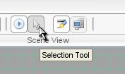
Figure 14
Once you have your camera view changed and saved, drag another copy of
the GarageGames logo into the scene to see its effects. Your new graphic
should be larger than your original graphic, due to the relative sizing
of the design resolution (as shown in Figure 15)
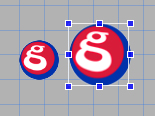
Figure 15
Even though we made the camera view cover a much larger area, T2D still
assumes that it represents an 800 X 600 screen and therefore sizes any
newly imported graphics appropriately.
Conclusion
This tutorial covered the basics of setting up a workspace, changing
the camera view and design resolution, and the effect it can have on a
project. As you become more familiar with this aspect of T2D, you will
learn to use the methods outlined above to streamline your workflow and
make your games more efficiently with minimal resize issues. You can
create all of your art for one resolution and have it sized
automatically in relation to your camera view or design resolution. I
hope this tutorial proves useful. Good luck! |